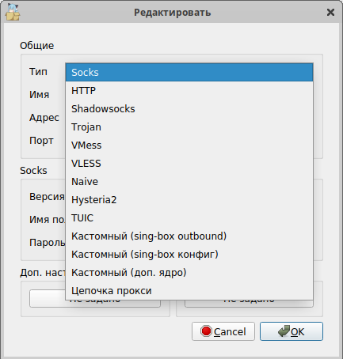

Здравствуйте, может знает кто, можно ли использовать чисто варп в nekoray? Просто в нëм очень удобное раздельное туннелирование. В Hiddify его нет (да и в целом он багованный) , в ameziaVPN он есть, но очень плохо работает. В nekoray можно использовать wireguard, но чистый wireguard вроде как не работает в рф и нужна обфускация как hiddify или amneziaWG. Или может подскажет кто другой способ разделеного туннелирования для варпа
И где же там wireguard?

Через какие-то костыли разве что.
Кастомный сингбокс атбаунд. По формату конфиг как у hiddify, только без фейковых пакетов
слезь с китайца, есть форк давно. который не раз в год обновляется. Releases · Mahdi-zarei/nekoray · GitHub
или вон через кастомный sing box
 в неко чистый wg
в неко чистый wg
Всё работает как и раньше.vless, vmess и даже ss-2022. Что не работает, так это ЕСН почему то не фурычит, причём ещё до того, как его начали блочить.
Там есть обфускация для wg?
к сожалению нету.
Печально(
Можно заюзать консольный warp-plus (он использует протокол warp, только первый запуск должен быть под VPN, т.к. он регистрируется в сети), а ниже по цепочке поставить что угодно во вкусу (тот же Nekoray как прокси-посредник / цепочка прокси). Только следите, чтобы не было рекурсии. Т.е. если Nekoray в режиме TUN, надо самому прописать исключение для IP варпа. Конечно, не очень красивое решение. Не факт, что будет стабильно работать.
Точно. А я и забыл. На рутрекере же упоминали. Правда, говорят там что-то выпилили, но по мелочи, вроде.
Поставил. Интерфейс стал слишком серым (а может просто системная тема подхватилась, я привык, что Qt5 приложения не подхватывают, но уж слишком серо). Но wireguard действительно появился.
Зачем мне что-то дальше по цепочке если мне нужен только варп? Такое себе решение если честно
Так Nekoray будет просто прокси повторителем. Можно его и не использовать, но ведь нужна выборочная проксификация/раздельное туннелирование, чего warp-plus не умеет.
Грубо говоря в Nekoray создаёте цепочку прокси: 127.0.0.1:8080 (warp-plus) > 127.0.0.1:2070 (приложения в системе) или TUN.
А можно вместо warp-plus использовать амнезиюWG?
Боюсь, что нет. Ведь амнезия не предоставляет socks.
а что именно нужно от варпа? если тебе нравится неко, можно рассмотреть реалити
Можешь использовать варп в hiddify через Nekoray. В параметрах конфигурации hiddify выставляешь режим “прокси”, именно его а не “системный прокси”, по умолчанию порт 12334. Далее подключаешься к варпу в хидди и создаешь в nekoray socks5 подключение, прописываешь туда адрес/порт и соединяешься. Можешь также использовать прокси расширения для браузера, например censor tracker или proxy switchyomega, и подключаться через них. Censor tracker уже по умолчанию имеет свой прокси (через который не советую проксировать ютуб ввиду большой нагрузки на их сервера) и содержит список большинства заблокированных адресов, недостающие можешь сам добавить.Также есть решение для дискорда ссылка
О, спасибо, попробую. Хотелось бы конечно чтобы всë одной программой делалось, но что есть, то есть
То что он бесплатный и в нём нет ограничений, например?
а, понял
Нашёл более изящное решение в виде Karing, в нём можно и в раздельное туннелирование и обфускацию для варпа
Интересно, спасибо
читал фак, чет не нашел обманку. скормил ему конфиг от hidiffy принял, сконетился, но не завелся.
{kind=link}
Вот такой профиль ему скормил, всё завелось и подключилось прямо из коробки, ничего не настраивал. Плохо что нельзя в нём самом редактировать уже сделанный профиль (по крайней мере я не нашёл такого способа). Обфускация работает, у меня 188.114.98-99 не работает без неё. Только что добавил такой же профиль, но без фейк пакетов - не завелось
Хидди выключал из диспетчера? Мб он как-то помешал, там просто остаётся процесс даже после выключения программы.
Только что проверил, хидди точно нужно из диспетчера вырубать, или не запустится. Хотя иногда и с ним запускается…
В общем попробовал, интересная штука, только так и не разобрался с правилом geoip. Адреса с русскими ip продолжают проксироваться
Не разбирался с этим, мне достаточно правил перенаправления. Мне не принципиально не пускать ру айпи через варп. Главное что оно работает только на браузер/дискорд, и можно добавлять домены в исключения
Понял, в хидди кстати точно такая же проблема с ру регионом, что даже некоторые сайты не имеющие русского ip почему-то отваливаются, поэтому приходится выставлять регион “другой”
Уже 2 день юзаю карринг, и просто в восторге. Пока что лучший вариант использовать варп на пк. Всё летает, 0 багов в отличии от того же хидди, + сделал форк на гитхабе, чтобы можно было без впн конфиг сгенерировать. В общем пушка
Сбросил в каринге настройки и правила, теперь geoip работает как надо, видать сам где-то нашаманил. Буду теперь им пользоваться.
UPD: аннет, оно все еще странно работает, отваливаются некоторые сайты, в том числе и этот. Попробовал переключить правило Final с “напрямую” на “текущий сервер” и обратно, все заработало. В общем пока не понятно в чем проблема
Дело даже не в geoip. я его вообще отключил. Если правило final установлено “напрямую”, нормально работает только firefox ¯_(ツ)_/¯
Не знаю, у меня всë как тут сделано, и всë работает Гайд по обходам - Google Docs
Если с браузерами проблема, то дело скорее в сетевом прокси, я его отключил и только режтм tun использую
Я в каринге сделал так:
- геоайпи и т.д. отключил
- создал одно общее правило в режиме AND для сайтов (для дискорда и т.д. отдельное правило делал)
- в верхнее поле (“суффикс доменного имени”) вписал то, что должно идти через варп (т.к. второе поле - “доменное имя” - работает не оч: например,
www.youtube.comиyoutube.com- это разные вещи, неудобно) - в поле процессы - браузеры
- режим - текущий сервер
- final - напрямую
- после этого надо выйти на главный экран, чтобы правила применились
Интересный момент: правила для процессов регистрозависимые. Я долго не мог понять, почему у меня не подхватывается дискорд - оказалось надо было с заглавной буквы писать название.
И ещë хочу добавить что от порядка правил всë зависит. Например процессы должны быть в самом низу списка. Я долго не мог понять почему оно не хочет пускать меня на 4pda через иностранный сервак, пока не поменял местами правила
Я так и не понял как их местами менять. Перетаскиванием они не двигаются и кнопки вверх-вниз я тоже не вижу.
Увы, походу нельзя, тоже столкнулся с этим. Пришлось пересоздавать правила
Меняются местами путём удержания лкм на правиле
Ох, реально… Спасибо